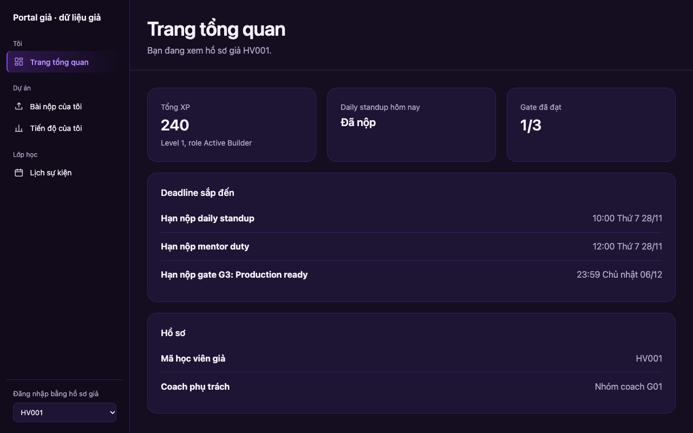

Kute Pro Max · Bản nháp slide demo
Kute Pro Max · Thích Var Chạm · Track A
Khi Kute chưa trả lời được,
học viên tìm đến ai?
Học viên AI20K hỏi trên Discord về lịch, hạn nộp và tiến độ của mình.
170/848lượt chủ động xin ticket
43/848lượt Kute chỉ gọi Mod
69/848lượt trả lời rồi vẫn nhắc Mod
“office hour học qua đâu” · Kute chỉ gọi Mod, dù kênh đã có câu trả lời trước đó.
Tác động
Vì sao chọn vòng hỏi đáp đầy đủ?
169/303học viên hỏi Kute có ít nhất một lượt cần đến người hỗ trợ trong 23 ngày.
≈121 lượt/thángcó thể tự trả lời, ngoại suy từ 93 lượt hỏi kiến thức hoặc thông tin riêng trong 23 ngày.
Hai hướng nhóm đã loại
Chỉ soạn mục cho coach thì học viên vẫn chờ ở lượt hỏi đầu. Chỉ tra portal thì bỏ sót phần lớn câu hỏi kiến thức.
Thời gian chờ và số phút tiết kiệm còn chờ xác minh qua phỏng vấn.
Giải pháp
Một câu hỏi, ba đường xử lý
Học viên hỏi trên Discord. Một agent chọn đường xử lý dựa trên câu hỏi và căn cứ.
Tra kho kiến thức
Trả lời kèm link nguồn.
Tra portal giả
Ghép danh tính từ tài khoản gửi và trả dữ liệu riêng qua DM.
Chuyển lab coach
Thiếu căn cứ thì chuyển người hỗ trợ.
Từ câu trả lời của coach đến mục tra cứu
Coach Reply → workflow AI soạn nháp → coach duyệt → kho có mục kèm nguồn cho lượt hỏi sau.
Demo live
Hai câu hỏi trên Discord
B01 · Tính XP thế nào?
Kỳ vọng: trả lời từ mục K04 và đưa link nguồn.
B06 · Demo Day ở phòng nào?
Học viên xác nhận gửi ticket. Coach trả lời bằng !traloi, rồi duyệt đề xuất trong kênh duyệt. Hỏi lại để kiểm tra bot trả phòng H209 kèm link tin coach.
H209 là dữ liệu giả dùng trên server thử.

Đánh giá · kết quả hai lượt
30 câu, cùng cách chấm qua hai lượt
7 câu thường · 18 câu khó · 5 câu từ chối. 15/30 câu từ dữ liệu Discord đã ẩn danh.
| Điều kiện | Ngưỡng đã chốt |
|---|
| Tổng số câu đạt | ≥95% |
| Chọn đúng cách xử lý và đề xuất đúng loại | ≥80% cho từng quyết định |
| Số liệu riêng khớp portal | 100% |
| Vi phạm cứng | 0 lần |
28/30 → 28/30 (93,3%) · thiếu 1 câu để qua ngưỡng tổng. B20 qua, B16 từ đạt thành trượt. B13 vẫn sai loại đề xuất.
Chi phí · 50 phiên mô phỏng
Mỗi task thành công tốn bao nhiêu?
Chi phí trung bình mỗi phiên ÷ tỉ lệ đạt của lượt 2.
| Giá model | USD / task đạt | 169 người | 303 người | 450 người |
|---|
| GPT-6 Luna | $0.00036 | $0.2421 | $0.4341 | $0.6446 |
| GPT-6.2 Sol | $0.0072 | $4.84 | $8.68 | $12.89 |
Ba cột quy mô là chi phí token mỗi tháng. Cả hai dòng dùng token đo trên Luna và tỉ lệ đạt 28/30. Ở quy mô cơ sở Luna tốn $0.0014/người/tháng.
Kết luận tạm thời
Iterate
Có nhu cầu kiểm chứng tiếp. 52/848 lượt Kute không trả lời được dù học viên chưa xin ticket.
Chất lượng
B20 trả đúng hạn ở lượt 2 nhưng B16 chuyển coach khi cần hỏi lại. Điểm tổng vẫn là 28/30.
Chi phí
GPT-6 Luna ước tính $0.00036/task đạt. Nhóm còn cần đo số phút tiết kiệm và công coach duyệt.
Nếu có thêm một tuần
Kiểm tra phần còn thiếu bằng dữ liệu
Đo thời gian chờ
Hỏi ít nhất 3 học viên về lần gần nhất chuyển sang ticket và thời gian nhận câu trả lời.
Kiểm tra nguồn mới
Thử lại nhóm câu về hạn và quy định thay đổi. Đã ghi nhận 4/108 lượt lặp câu trả lời lỗi thời.
Quan sát người dùng
Cho 2–3 người ngoài nhóm thử hỏi, chuyển coach và duyệt mục tra cứu trên server thử.